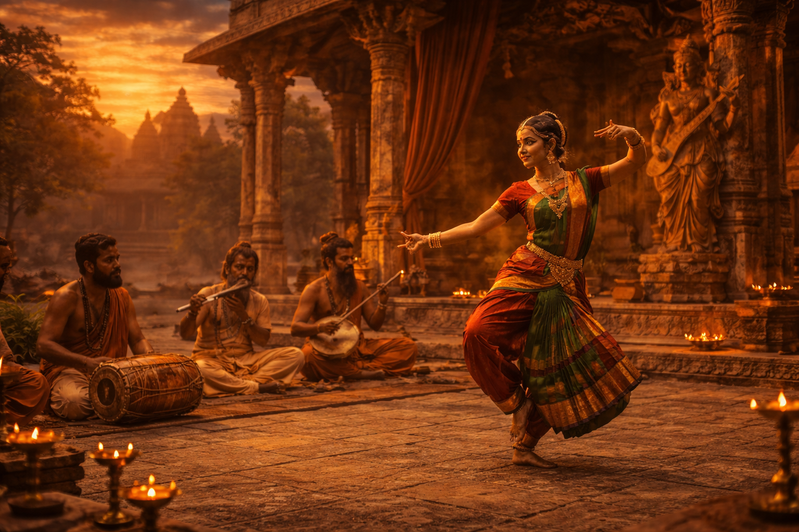

Vedic Literature
Ancient sacred texts that shaped the spiritual and cultural foundations of Indian civilization
Explore
Upanishadic Philosophy
The Upanishads explore deep philosophical ideas about the universe, the soul, and ultimate reality. They form the core of India's spiritual and intellectual traditions.
Explore
Hindustani & Carnatic Music Origins
Hindustani Classical Music evolved in North India with Persian influence, while Carnatic Music developed in South India with strong devotional roots
Explore
Bharatanatyam
Bharatanatyam is one of the oldest classical dance traditions of India. It originated in temples and expresses stories through graceful movements and symbolic gestures.
Explore
Mauryan Sculpture
Mauryan sculpture is known for its polished stone surfaces and powerful symbolic forms. It reflects the artistic excellence of early imperial India
Explore
Gupta Art
The Gupta age is often called the golden age of Indian art. Sculptures from this period display perfect balance, elegance, and spiritual expression.
Explore
Ancient Indian
Jewelry
Indian artisans created intricate jewelry and beautifully woven textiles. These crafts reflected the creativity and cultural richness of ancient society.
Explore
Sanskrit Poetry
Ancient India produced remarkable poetic works filled with beauty, devotion, and philosophical depth. These poems celebrated nature, love, and spiritual ideas.
Explore
Temple Sculpture
Iconography
Temple sculptures in ancient India were not just decorative but deeply symbolic. They depicted stories of deities, mythology, and spiritual teachings.
Explore